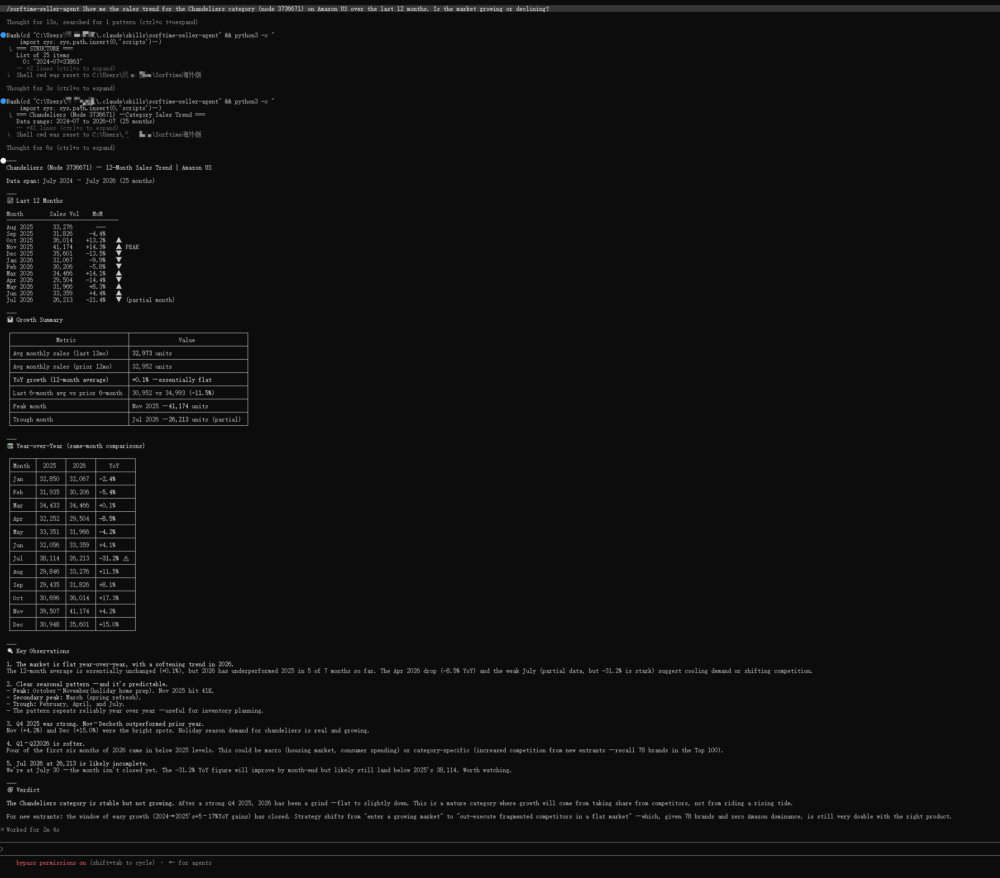

FBA fees went up. Storage fees went up. Removal fees went up. If you have not updated your profit calculator this year, your margins are worse than you think.
Amazon's 2026 fee update, effective January 15 with a fuel and logistics surcharge hitting in April, is not a single shock. It is a layered set of changes across fulfillment, storage, inbound logistics, inventory aging, and removal. Each change is modest on its own. Taken together, they represent a meaningful cost increase for any seller who relies on FBA.
This article breaks down what changed, which products are most affected, and gives you a working tool to recalculate margins before the next statement surprises you.
Amazon published its official 2026 US Referral and FBA fee changes summary with an average FBA fee increase of $0.08 per unit, or less than 0.5% of an average selling price. The headline number sounds manageable. The reality depends heavily on product size, price point, and inventory velocity.
Here is what changed across the major fee categories.
### Fulfillment fees (effective January 15, 2026)
| Price Tier | Small Standard | Large Standard |
|—-|—-|—-|
| Below $10 | +$0.12/unit | Unchanged |
| $10-$50 | +$0.25/unit | +$0.05/unit |
| Above $50 | +$0.51/unit | +$0.31/unit |
Products priced above $50 saw the largest increases because, per Amazon, they require a higher level of service including extra handling, faster processing, and an improved returns experience.
### Fuel and logistics surcharge (effective April 17, 2026)
A 3.5% surcharge was applied to all FBA fulfillment fees in the US and Canada. This is not a one-time adjustment. It is a percentage-based levy that scales with every fee increase going forward. For a product with a $6.00 fulfillment fee, the surcharge adds $0.21. For a product with a $20.00 fulfillment fee, it adds $0.70. During peak season (October 15 through January 14), the surcharge compounds on already-elevated peak rates.
### Inbound placement service fee (effective January 15, 2026)
Standard-size products using the minimal shipment splits option saw an average increase of $0.05 per unit. Shipments that do not arrive, arrive late, or are delivered to the wrong location now incur a single inbound defect fee of $0.60 per unit on average, replacing the previous two-fee structure.
### Aging inventory and removal fees
The minimum aged inventory fee for items stored 12-15 months doubled from $0.15 to $0.30 per unit per month. A new tier was introduced for items aged over 15 months: $0.35 per unit or $7.90 per cubic foot, whichever is greater. On the positive side, removal and disposal fees for standard-size items under 0.5 lb were reduced by $0.20 per unit, likely to encourage faster clearance of dead stock.
### Low-inventory-level fee change
This fee now applies at the FNSKU level rather than the parent-ASIN level. If a specific variation of a product falls below 28 days of supply, that variation incurs the fee even if other variations in the same family are well-stocked. Grocery products were granted an exemption.
### Bulky and extra-large adjustments
Amazon split the large bulky size tier into small bulky and large bulky. Small bulky fulfillment fees decreased by an average of $2.06 per unit. Large bulky fees decreased by $0.26 per unit. Extra-large product fees dropped by $2.08 per unit on average. These reductions are partially offset by a new packaging fee averaging $2.07 per unit for bulky products that cannot ship in their own packaging.
The changes are not uniformly distributed. Three seller profiles face the most margin erosion.
Sellers of standard-size products above $50. This group absorbed the largest per-unit fulfillment increases and saw no offsetting reductions in other categories. A small standard item above $50 now costs $0.51 more to fulfill, plus the 3.5% fuel surcharge on top of that.
Sellers with slow-moving inventory. The doubled aged inventory fee for 12-15 month stock and the new tier for 15+ month stock penalize products with low turnover rates. Combined with the low-inventory-level fee applying at the FNSKU level, sellers face pressure from both directions — pay more for holding excess stock, or pay more for running too lean.
Sellers using minimal inbound splits. The inbound placement fee increase of $0.05 per unit on the minimal splits option adds up across thousands of units. The Amazon-optimized shipment splits option still carries no fee, but requires shipping to more destinations, which raises transportation costs.
Amazon provides the Revenue Calculator and the Profit Analytics dashboard for fee estimation. These tools are useful for individual ASIN checks but do not scale well for catalog-wide analysis.
Here is a command-line approach using the open-source Sorftime Seller Agent to pull fee data across your catalog and estimate the impact of the 2026 changes.
# Install sorftime-seller-agent from GitHub
git clone https://github.com/sorftime/sorftime-seller-agent.git
cd sorftime-seller-agent
# Install dependencies
npm install
# Configure your API key
cp .env.example .env
# Edit .env and add your Sorftime API key
# Run a margin impact scan across your ASIN list
# Replace asins.txt with your product list, one ASIN per line
npx ts-node scripts/margin-impact.ts \
--asins ./asins.txt \
--fee-year 2026 \
--apply-fuel-surcharge \
--output csv > margin-impact-2026.csvThe script outputs a CSV with columns for ASIN, current margin, estimated 2026 margin with all fee changes applied, and the delta. This gives you a ranked view of which products need price adjustments, cost reductions, or potential discontinuation.
Audit slow-moving inventory. Run an inventory age report and identify products with 9+ months of storage. For items aged 12-15 months, the fee has doubled. The breakeven point between paying aged fees versus removal has shifted. Run the math on whether disposal at the reduced rate makes sense before the next aged fee assessment.
Review FNSKU-level inventory targets. With the low-inventory-level fee applied per FNSKU, variations with lower demand within a parent ASIN now carry their own risk. Consider consolidating slow variations or adjusting replenishment targets at the variation level rather than the parent level.
Recalculate profitability by price tier. Products in different price ranges were affected differently. A product priced at $9.99 received a smaller increase than one at $10.01. The pricing boundary at $10 matters more than it did in 2025. Review products that sit near these thresholds and evaluate whether a small price adjustment changes the fee tier.
These 2026 fee changes follow a pattern Amazon has established over several years: incremental adjustments that compound across fee categories, with reductions on bulky and extra-large items offset by increases on standard-size products that make up the bulk of catalog volume. The 3.5% fuel surcharge is the newest structural addition, and unlike fixed fee amounts, it scales automatically with future fee increases.
Sellers who update their profit models and inventory strategy in response to these changes will protect margins. Sellers who rely on last year's numbers are already losing money they have not noticed yet.
*Sorftime Seller Agent is an open-source MCP toolkit for marketplace intelligence. It pulls real-time fee data, inventory metrics, and profit analysis across Amazon, Walmart, TikTok Shop, and more.*
git clone https://github.com/sorftime/sorftime-seller-agent.git*For a live dashboard and catalog-wide margin analysis, visit open-intl.sorftime.com.*